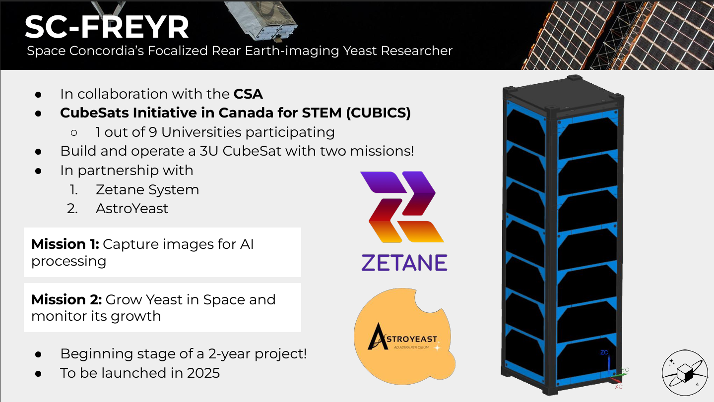

Projects
- Launching CubeSat Into Space
-
- Responsible for electronics, software, and data management tasks essential for the success of space missions, including spacecraft system development, data analysis, and mission planning.
- Applying programming knowledge to utilize IDEs to create operating systems as an Embedded System Engineer to facilitate communication between hardware and software components on a CubeSat.
- 
- ConUHacks VIII "Left-Overs" Application
-
- 24-hour hackathon, team name: LeftOvers
- Created a mobile application on Unity, with a UI, that communicates with several APIs to drive text and media-based data into the program.
- Takes user-inputed ingredients which provides dishes that use said ingredients, with their cooking time and difficulty, and calorie amount
- The app provides step-by-step instructions on how to cook every dish
- This app is meant to help minimize food waste and decrease GHG emissions, while allowing users to explore new dishes.
- Link to DevPost
- AI-Powered Cybersecurity research project using CyberBattleSim
-
During my final semester at Dawson, I had the opportunity to participate in a volunteer internship. This unique experience was a collaboration between Dawson and Concordia University within the newly established Applied AI Institute. The primary focus of this internship revolved around gaining hands-on knowledge about harnessing Artificial Intelligence to devise innovative solutions across diverse domains, including climate change, smart cities, healthcare, transportation, aerospace, cybersecurity, privacy, and trust. My project was related to utilizing AI to help mitigate areas of cybersecurity that require intense manual labor such as Penetration Testing. Machine learning, specifically reinforcement learning, was used to advance an agent (AI) to gain rewards by attacking a smart grid using a process known as the Markov-Decision Process where the agent is trained to find vulnerabilities in the system, such that vulnerable areas in the system become apparent so they can be fixed and further protected. OpenAI gym and Cyberbattlesim were utilized to perform these tasks and were further benchmarked. Furthermore, by the end of the internship my project teammates and I designed the poster below and created a slideshow to present it to judges and organisation directors. - Click to see Internship Poster
- Dawscon23 Data visualisation project
-
This was a programming challenge in which case groups were given 24 hours to tell a story about a topic of choice using online data that is then morphed into informative graphs using only python programming. In our project we spoke about food waste. This project was mainly coded using the PANDAS python library. - Link to DevPost
|